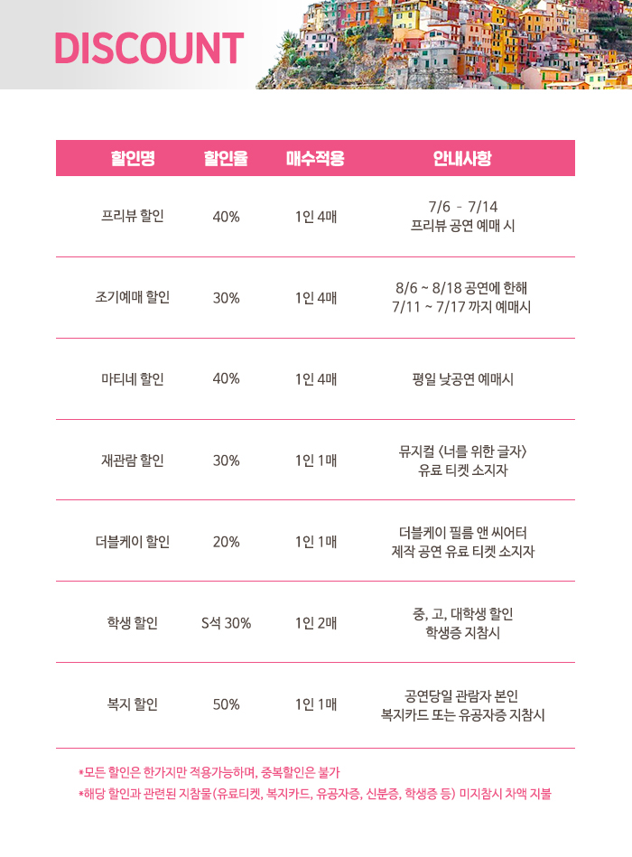

2019년 7월 6일(토)~2019년 9월 1일(일)
화,목,금 오후 8시/수 오후 4시,8시/토 오후3시,7시/일,공휴일 오후 2시,6시/월 쉼
예매 공지사항
※ 2차 티켓오픈 : 2019년 7월 11일(목) 오후 2시
※ 2차 오픈기간: 2019년 8월 6일(화) ~ 8월 18일(일)
※ 본 공연은 공연시간 3시간 전까지 예매가능합니다.
단, 아래 취소마감시간 이후 예매되는 티켓은 취소 및 변경, 환불이 불가하오니 유의해주시기 바랍니다.
[취소마감시간]
공연관람일이 화요일~토요일인 경우 전날 평일 오후 5시
공연관람일이 일요일~월요일인 경우 토요일 오전 11시
공휴일 및 공휴일 다음날
- 공휴일 전날이 평일인 경우 오후 5시
- 공휴일 전날이 토요일, 일요일인 경우 토요일 오전 11시

기획사 정보
제 작 : ㈜더블케이필름앤씨어터
홍보마케팅 : 더웨이브
제작 투자 : ㈜카카오
후 원 : 깐부치킨
문 의 : 클립서비스㈜ 1577-3363
상품정보제공 고시
상품정보제공 고시
주최 / 기획
㈜더블케이필름앤씨어터
공연 관련 문의
클립서비스㈜ 1577-3363
예매 관련 문의
1899-0042
이용가능 장소
예스24 스테이지 1관
유효기간(이용조건)
2019.07.06 - 2019.09.01 (예매한 공연 회차에 한해 이용가능)
취소 / 환불조건
- 취소마감시간 이후 또는 관람일 당일 예매하신 건에 대해서는 취소/변경/환불이 불가합니다.
- 예매수수료는 예매 당일 밤 12시 이전까지 취소 시 환불 가능합니다.
- 배송이 시작된 경우 취소마감시간 이전까지 멜론티켓 고객센터로 티켓을 반환해주셔야 환불이 가능하며, 도착한 일자 기준으로 취소수수료가 부과됩니다. (* 단, 반환된 티켓의 배송료는 환불되지 않으며 일괄배송 상품의 경우 취소에 대한 자세한 문의는 고객센터로 문의해 주시기 바랍니다.)
- 예매취소 시점과 결제 시 사용하신 신용카드사의 환불 처리기준에 따라 취소금액의 환급방법과 환급일은 다소 차이가 있을 수 있습니다.
- 티켓 부분 취소 시 신용카드 할부 결제는 티켓 예매 시점으로 적용됩니다. (무이자할부 행사기간이 지날 경우 혜택 받지 못하실 수 있으니 유의하시기 바랍니다. )
- 취소일자에 따라 아래와 같이 취소수수료가 부과됩니다. (예매 후 7일 이내라도 취소시점이 관람일로부터 10일 이내라면 관람일 기준의 취소수수료가 부과됩니다.)